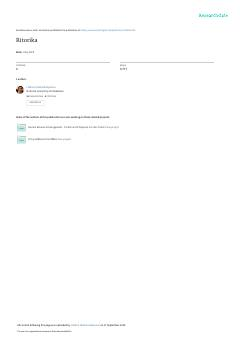

RNotiqlik san'ati va nutq madaniyati asoslariga bag'ishlangan o'quv qo'llanma.
Ushbu darslik ritorika fanining nazariy asoslari, notiqlik san'ati qoidalari va nutq madaniyatini rivojlantirish usullarini qamrab oladi. Kitobda notiq imiji, taqdimot marosimlari va o'zbek tilining davlat tili sifatidagi o'rni ilmiy tahlil qilingan.